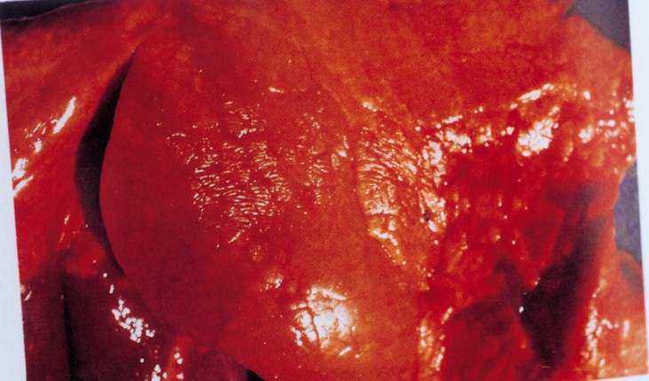
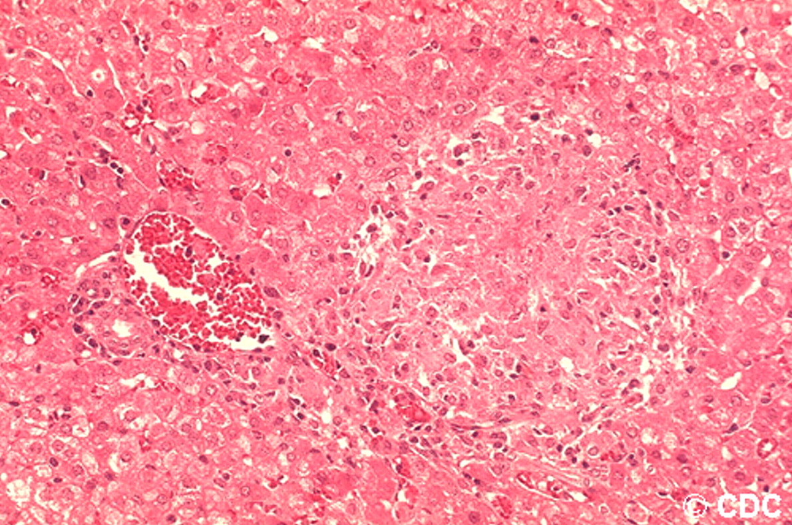

Brucella suis
Importance
Porcine brucellosis, caused by the bacterium Brucella suis, is an economically important cause of reproductive loses in pigs. This organism can be maintained in wild and feral swine, complicating eradication efforts in domesticated pigs. One variant, found only in Europe, is also maintained in hares. Some variants of B. suis mainly affect caribou, reindeer or rodents, and are not important in pigs.
Species Affected
Most species of Brucella are primarily associated with certain hosts; however, infections can also occur in other species, particularly when they are kept in close contact. B. suis biovars 1, 2 and 3 affect swine. Biovars 1 and 3 are found in both domesticated pigs.
B. suis biovars have been reported occasionally in cattle, small ruminants, horses, dogs and other spillover hosts.
Additional Information
Infected Pig
Bacteria in Animals
Diseases brought about by bacteria’s
in the animals body have been rampantly spreading.
Histopathologic Features
Bacteria in Animals
Diseases brought about by bacteria’s
in the animals body have been rampantly spreading.
Back